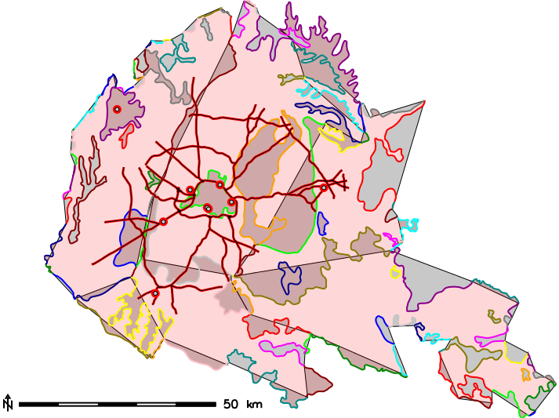
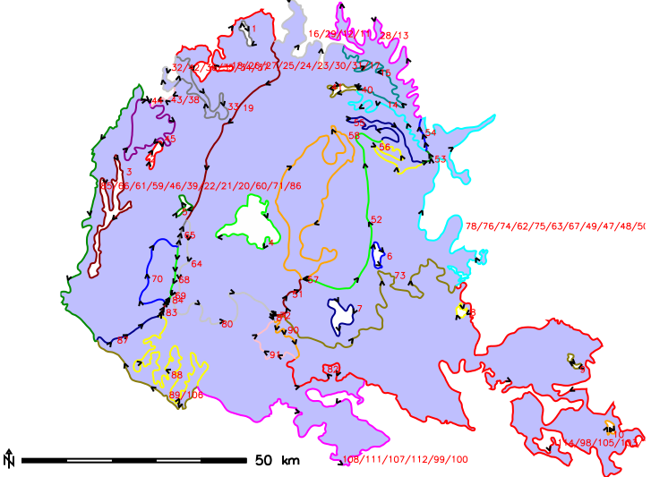
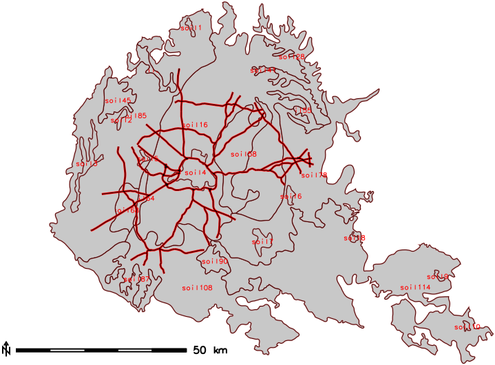
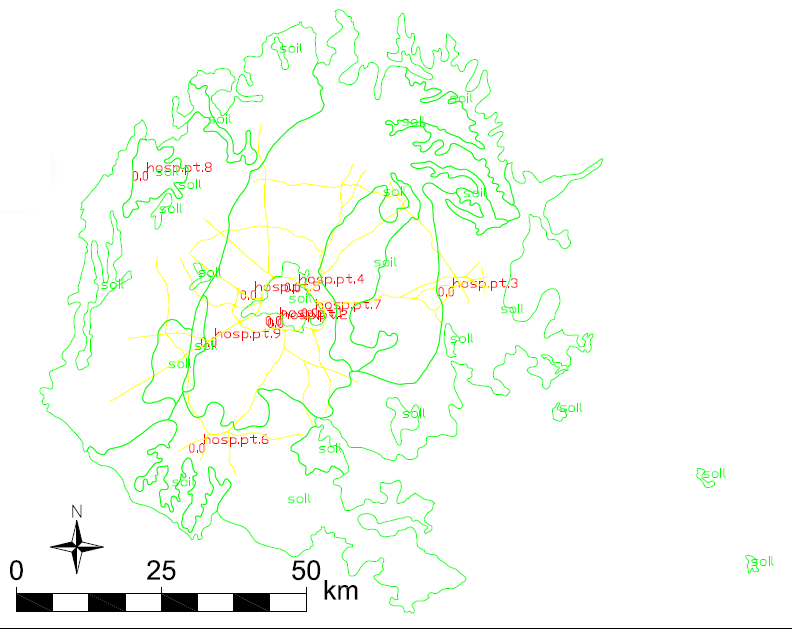

DESCRIPTION
v.in.survey imports points from ASCII file into specific vector layers by point names. The script
joins several modules to perform following steps:
- The data is sorted according to point names to keep points from separated layers together.
- The script scans input file and creates separate files for each layer. Layers are distinguished by
point names that provide information on layer name, vector type and point identifier. More detailed information about
how to draft point names in your dataset (during data acquisition or in post-processing) is provided in Notes
section.
- Line and polygon data are converted to standard format (input data should respect topological rules to get
geometrically correct layers).
- Then, new vector layer is created using v.in.ascii. Points are stored in point layer; lines and polygons in
line layer at this moment. Lines that store polygon data are converted to new polygon layer using v.centroid.
- Attribute table is maintained for line and polygon layers (points are imported in point format with the attributes
as well).
- in case of line layers, categories are added at first using v.category,
- attribute table is created using v.db.addtable,
- column that stores layer name is updated using v.db.update.
- There is an option to merge the features by v.patch using various patterns to detect desired layers.
For more details, see Notes.
- Finally, v.clean is performed to clean the topology if any layers have been merged.
- If desired, conversion to DXF file is performed as well.
NOTES
Input data
Several recommendations how to format the data:
- only input data in point format is accepted. The file should contain just point identifier (see next item) and
coordinates in two- or three-dimensional space.
Point_name easting northing [elevation]
name.code.number x y [z]
- Point name provides information that is substantial for new layer creation - name and desired type of vector. Required
format of the point name looks like this:
Items are separated by dots. To get correct results, please remove or replace all redundant dots in the input data.
|
|
any short, descriptive name as you wish your layer to be named. Please do not use spaces or dots.
|
|
|
information about vector type of the new layer (point, line, polygon). You may define your own codes that
refer directly to the geometry (e.g. point, line, poly etc. including various
abbreviations). Or you may specify that e.g. tree, bush etc. are codes for point features,
river, profile etc. refer to line segments and lake and
house represent new polygon layers.
|
|
|
simple identifier of the point in the layer (preferably plain numbering)
|
- if using a header or columns' names, refer this in skip parameter
- if necessary to merge any layers, please give them a name with specific prefix, which should be used as
merging rule as well. Merging rule that is based on suffix or another part of the layer name is not recognized.
- if the module crashes suddenly during large dataset processing,
it might be caused by incomplete data writing to the layer input file. Please divide input data into several smaller
files (probably depends on your computer performance).
Conversion to DXF
If you wish to convert the data to DXF, please use -x flag. Then, it is necessary to set up:
- the name of DXF file. The file will be written into the output directory.
- drawing units. Default value: metric. Another option: imperial.
- height of the text. Default value: 0.0 (the height will be derived as a fraction (0.003) of longer side of a rectangular
mapset region)
Output drawing consists of geometry layers (point, line and polygon) supplemented with text. The text layers contain elevation of the vertices
and labels of the points and of the objects as Fig. 4 shows.
EXAMPLES
This example is based on the sample dataset of North Carolina
(nc_spm_08_grass7).
Point vector layer hospitals, line vector layer railroads and polygon vector layer soil_general have
been exported to the text files, vertices have been renamed and the files have been merged. This final input was used as
test data for the script.
v.in.survey input=test_data.dat separator=tab skip=1 easting=2 northing=3 pt_rules=pt ln_rules=ln poly_rules=poly outdir=NC_test
|
Fig. 1: Imported features with broken areas
|
Fig. 2: Lines with the directions
|
Fig. 3: Imported features with correct areas
|
|

|

|

|
To fix broken areas, original lines have been merged using v.edit according to their categories. Then points have been
exported again and they were copied to enclose each area - respecting lines and the directions as might be seen in
Fig. 2. In Fig. 3, there is shown that areas fit well too after editing input file.
If it is necessary also to merge some of the layers, then merging rules can be set up:
v.in.survey input=test_data_small_corrected_soils.dat separator=tab easting=2 northing=3 pt_rules=pt ln_rules=ln poly_rules=poly \
outdir=NC_test_small_merge merge_lyrs=road,soil
Fig. 1: DXF drawing together with the labels
(north arrow and scale have been added later)
|
|

|
The colours in DXF drawing have been set up automatically. In this case, labels of roads and elevation labels of soil types
have been switched of because of too large amount of the data. Examples of more detailed exports can be seen in
(Stopkova, 2016).
WARNINGS
WARNING: There are no layers to merge into <item>.
Any imported layer does not match given item referring how to merge layers in script settings.
ERROR MESSAGES
Input data:
ERROR: Too many columns. Use input data in format 'name east north [elev]', please.
Current version supports only import of 2D or 3D geometry and point name. Edit input file and run script again.
ERROR: Please rename point in line i according to the script request in format
'lyr_name.vect_type_code.number'.
Point name is expected to provide information in particular format. Edit point name in ith line of the
input file and run script again.
ERROR: Please do not use SQL forbidden characters in your input data. Remove all 'char' from the file.
Any special characters are not allowed in the data. Please use just dots to separate parts of point names. If
necessary, make the names more clear using underscores.
ERROR: Not enough points to make line layer <layer>.
ERROR: Not enough points to make polygon layer <layer>.
These errors may refer to:
- a typographical mistake in particular point's name. Edit point's name in the input file and run script again.
- mixed layers. See (Stopkova, 2016) for more details. Edit point's name in the input file and run script again.
- broken geometry (just one point referring to a line or less than three points referring to a polygon). Please remove
these points or edit their vector type (middle part of point name) to refer to a point.
Script settings:
ERROR: Wrong separator type.
The separator does not fit the data file. Please set up another type: pipe, comma, space, tab,
newline. Default: pipe
ERROR: Vector layer layer is not point, neither line, nor boundary. Please check your input data and rules that
you have typed in.
Vector type information (middle part of the point name) does not match to any of geometry codes that you have
entered. Please compare input settings with point names in the data file, complete input settings (or edit input data)
and run the script again.
ERROR: Please redefine merging option <char>. Different vector types match this rule.
Merging different vector types is not allowed. This might be matter of comparing layer names with too free rules:
Tab. 1: Example of too free rules for merging layers
| river |
|
river -> river_stream |
| river_stream_Danube |
|
river_area_Danube |
| river_stream_Vah |
|
river_stream_Vah |
| river_stream_Hron |
|
river_stream_Hron |
In the left column, there are summarized line objects that should be merged to one single layers called
river. This merge is possible, as all the features are represented by line. In the right column, there
are summarized rivers as well. But they cannot be merged, because the Danube river is represented by polygon and the rest of the
features are lines. It would be better to use merging criteria river_stream
to separate just line object to be merged.
Files:
ERROR: File filename does not exist.
Missing input file.
Output layers:
ERROR: Vector layer <layer> exists. Please remove the layer or rename the input points.
There is a layer with identical name in the mapset. Overwrite it, rename it or rename the layer in the input file
(edit points names). However, this error usually happens if points that belong to several layers are mixed in the file as well. How to prevent this,
examples in (Stopkova, 2016) can demonstrate.
Empty layer (not reported in command output): if the layer exists but is empty, please check the input points. This might happened
because of wrong point order (especially if the point order has been edited).
DXF conversion:
ERROR: Please set up the drawing units to 'metric' or to 'imperial'.
Anything else cannot be accepted (in accordance to DXF settings). Default value: metric.
SEE ALSO
v.in.ascii,
v.centroids,
g.remove,
v.db.addtable,
v.db.update,
v.patch,
v.clean,
v.out.dxf
Stopkova, E. (in print). Open-source tool for automatic import of coded surveying data to multiple vector layers in GIS
environment. In Geoinformatics FCE CTU. Vol. 15, No. 2 (2016). Prague: Czech Technical University, Faculty of Civil
Engineering. ISSN 1802-2669. DOI.
AUTHOR
Eva Stopkova
functions for DXF conversion are taken from (or based on) the module v.out.dxf (Charles Ehlschlaeger and Radim Blazek)